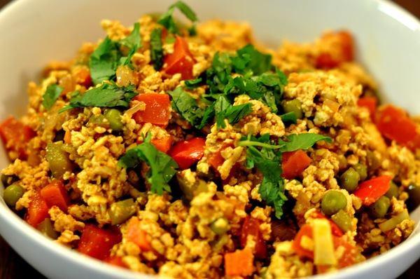

Scrambled Eggs - Eggs Bhurji
Eggs bhurji are a type of scrambled eggs that have vegetables added to them.
This will be a basic recipe, you can add other vegetables such as green peppers or mushrooms if you want.
Ingredients
- 3 Eggs
- 1/2 a Red Onion
- 1/2 a Tomato
- Salt to taste
- Vegetable Oil
Instructions
- Dice your onion and tomato.
- Break your eggs and beat.
- Heat a pan with with some vegetable oil to medium-high.
- Add and Saute your diced onions for 2-3 minutes until it starts to brown.
- Add your tomatoes and keep mixing until diced tomatoes become slightly cooked.
- Add your eggs and salt, then stir continuously as it cooks.
- Cook to your preferred level of doneness.